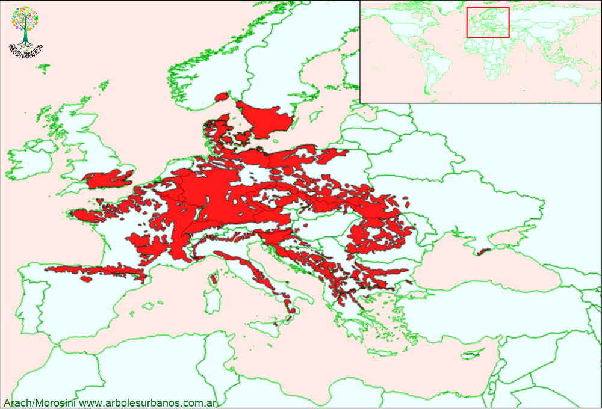

Fagus sylvatica (Haya europea)

Haya europea
NOMBRE CIENTÍFICO: Fagus sylvatica
FAMILIA BOTÁNICA: Fagáceas
ORIGEN: Tiene un área de distribución natural que ocupa el centro de Europa, en el desde la costa mediterránea y la península Itálica, hasta el sur de las islas británicas y el sur Suecia y Noruega, desde el norte de España y los Pirineos, hasta Turquía en este. Formando bosques puros, pero también formaciones mixtas tanto con otras latifoliadas como robles y castaños, con los cuales está emparentada, también con coníferas principalmente pináceas.
DESCRIPCIÓN GENERAL: Es un árbol de primera magnitud superando los 20 metros de altura (muchas veces superan los 35 metros) y pasando el 1,5 metros de diámetro. Con porte columnar cuando crece en bosques densos y con una copa muy amplia si no tiene competencia. Su corteza juvenil es lisa y gris, cuando es adulta , es fisurada longitudinalmente y de color pardo.
HOJAS: Sus hojas son simples y se disponen de manera alterna, son de color verde en el as y en el envés un poco más claro, de consistencia papirácea. Tiene forma ovoide y su borde es crenado y algo dentado; son caducas y anters de caer a fines del otoño se tornan de color amarillo dorado.
FLORES: las flores masculinas y femeninas están separadas pero en el mismo árbol, no son muy vistosas de menos de 1,5 cm, casi siempre situadas en las axilas foliares.
FRUTOS: Los frutos aquenios que contiene 3 semillas, son de color marrón oscuro y se abren para liberarlas a fines del verano.
USOS: Tiene una importancia forestal muy grande, su madera calificada como semidura, se utiliza de muchas maneras distintas desde madera estructural, laminada, etc. Como ornamental se lo utiliza como punto focal, en alineaciones y en grupos en grandes parques.
REPRODUCCIÓN: La semillas se deben estratificar 2 meses a 4º y luego se siembran con una buena germinación (superior al 50%), las variedades se multiplican por injertos sobre pies de hayas comunes.
PARTICULARIDADES: Es una especie que soporta mejor el frio que lo veranos caluroso y secos, existen muchas variedades y cultivares, de distintos tamaños y formas (fastigiadas, péndulas, etc.) y de diversos colores de follaje.